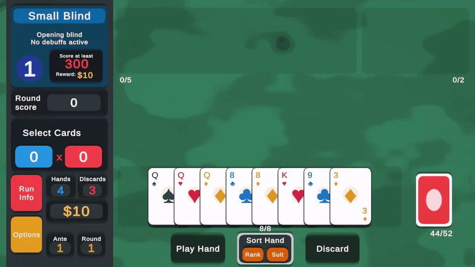

I can ship
Worked on commercial mobile games that reached players, including publishing support and production maintenance.
Unity / C# · Mobile Games · Multiplayer · LiveOps
I’m a Unity/C# Gameplay Developer with 5+ years of experience building commercial mobile games for Android and iOS. I work where gameplay, UI, networking, monetization, analytics, and release tooling meet — the parts that make a game playable, maintainable, and ready for real players.
For recruiters
My portfolio is organized around proof: playable work, published games, production ownership, and clear explanations for technical and non-technical reviewers.
Worked on commercial mobile games that reached players, including publishing support and production maintenance.
Built systems for cards, hands, melds, discard piles, turns, scoring, rule variants, feedback, and UI synchronization.
Worked with subscriptions, analytics, Remote Config, push notifications, observability, and release workflows.
Use state-driven and event-driven patterns to make complex game flows easier to debug, test and maintain.
Selected work
Three pieces of evidence: one playable portfolio sample, one currently published mobile game, and one previously published project preserved through screenshots and technical notes.
A commercial real-time multiplayer card game where I work as the primary Unity developer, owning gameplay systems, client architecture, networking integration, monetization, diagnostics, and release tooling.
A mobile project I worked on at OutWorld Studio, preserved as a portfolio case study through screenshots, technical notes, and feature breakdowns after the game was discontinued.

A Balatro-inspired Unity project created to demonstrate gameplay architecture, clean C# structure, deterministic poker-hand evaluation, selection flow, scoring, and separation between game state and visuals.
Technical profile
Skills are grouped by the problems they solve for a studio, so both technical and non-technical reviewers can understand the value behind the tools.
Turning design rules into playable, maintainable features.
Helping games survive the jump from editor to real devices and stores.
Keeping players, servers, and screens synchronized.
Supporting a game after launch with data, configuration, and business-critical flows.
Making complex game code easier to debug, extend, and reason about.
Reducing repetitive work and making production issues easier to investigate.
Career
A concise timeline focused on ownership, production impact, and responsibilities expected from a strong gameplay engineer.
Primary Unity developer for a commercial real-time multiplayer mobile card game.
Unity/C# developer on a mobile game project, working with gameplay, UI, VFX, content delivery, and production workflows.
C#/.NET software development for financial-market systems before fully specializing in games.
Some commercial work cannot expose private repositories or internal implementation details. When source code is unavailable, I present public store links, screenshots, my role, technical responsibilities, and sanitized breakdowns of the systems I worked on.
Contact
I’m looking for Gameplay Programmer, Game Engineer, Unity Developer, and Mobile Game Developer opportunities where I can contribute to commercially viable games.